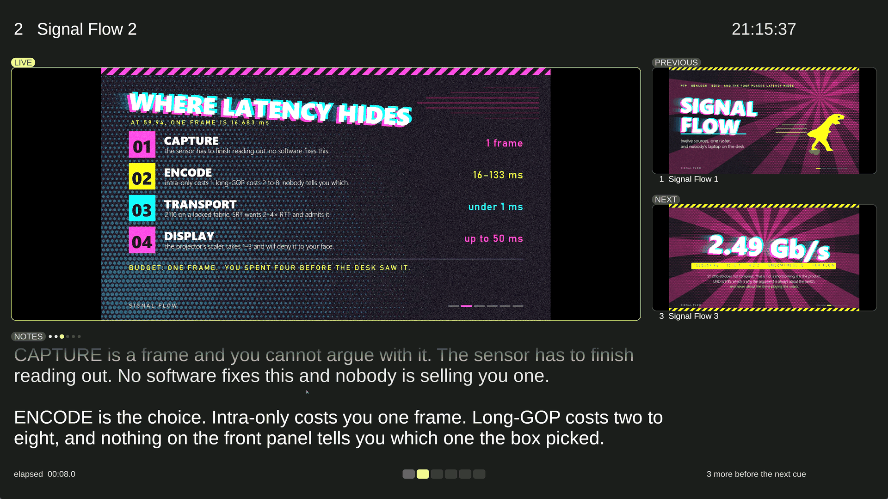

A deck is cues. The desktop never appears.
Running a talk from PowerPoint on the show machine means the projector is showing a window. Alt-tab, a notification, the end of the deck, a crash — any of them puts a desktop on a screen a room is looking at. Meanwhile the video clips live in a different application, the presenter's notes live on a laptop nobody can cue from, and the handover between the two is a person hoping.
Deckboy imports the deck instead. Every page becomes an ordinary cue in the same list as the clips, so slides and video are the same show, run the same way, on outputs that hold the last frame rather than revealing anything behind them.
| File | How |
|---|---|
.pdf | Rendered directly, one image cue per page |
.pptx, .ppt | PowerPoint exports a PDF, or LibreOffice where PowerPoint is not installed |
.key | Keynote exports a PDF, then LibreOffice as a fallback |
.odp | LibreOffice exports a PDF |
Each format is handed to the application that owns it: that application
exports a PDF, and Deckboy rasterises it with the renderer the operating system
already ships — Windows.Data.Pdf on
Windows, which is Edge's; CoreGraphics on macOS, which is Preview's;
pdftoppm on Linux. A half-right renderer that puts a slide's type
in the wrong place is worse on a show day than an honest refusal, so where none
of them is installed Deckboy says which one to install rather than calling the
file unsupported.
Pages are rasterised once, at import, and never again. Nothing during the show depends on a document renderer being fast, being present, or deciding to reflow a page halfway through the keynote. Once a slide is a still it behaves like every other cue: it takes, it fades, it crossfades to the next one, it carries effects.
Exporting to PDF flattens builds and drops transitions. That is a property of the export, not of Deckboy, and no PDF-based route in any application avoids it: a PowerPoint deck that animates arrives as static slides.
If a deck's animations do not matter, importing is better in every way: no second application on the show machine, no alt-tab, and the slides crossfade like video because they are video cues.
Speaker notes come out of a .pptx with the slides — the file is a
ZIP with the notes as XML inside — so they arrive attached to the cue that shows
the slide.
Presenter view is an output type, not a window. It is assigned to a display the way the projector feed is, so the speaker's laptop screen or the confidence monitor at the lectern is simply another output of the show, driven by the same cue list. It carries the live slide, the previous and next slides, the notes, a clock and timers, and every one of those panels can be switched off.

Turn the three pictures off and the notes take the whole screen, which is what somebody reading a long script from a lectern actually wants. Background, ink and accent are set as hex colours, because a presenter screen is often somebody else's laptop in somebody else's room and "make it readable in here" is a real request.
A cue's notes split on a line that is exactly ---, and the
presenter advances through those parts without changing the slide, so a long note
is read at the speaker's pace instead of arriving all at once.
The prompter is a separate output type for the person reading out loud. Left empty it follows the live cue's notes; given a script it runs a talk that has no slides at all. It mirrors — horizontally by default, vertically as well, because a beamsplitter can sit above or below the lens — and its pace is set in lines per minute rather than pixels per second, so a pace belongs to the reader and means the same thing when the type size or the screen changes. Text scrolls up through a fixed reading line, so the words being spoken are always in the same place.
Nothing. Deckboy is GPL-3.0, for Windows, macOS and Linux, with no account, no licence server and no telemetry. Presenter view and the prompter are not a tier.
How Deckboy compares to ProPresenter, QLab, Mitti and the rest · Questions people ask before a show